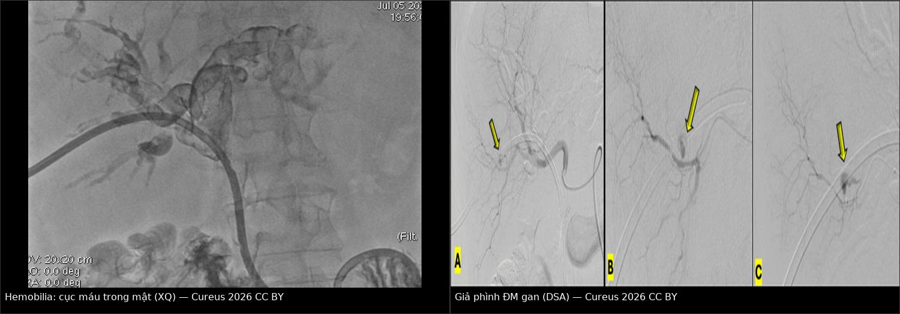
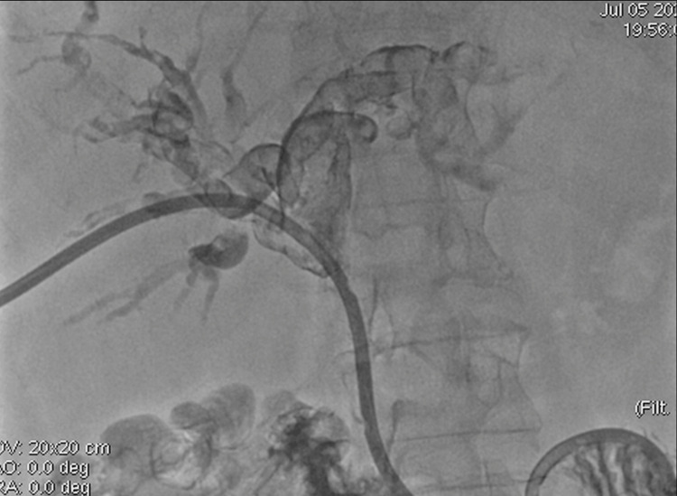
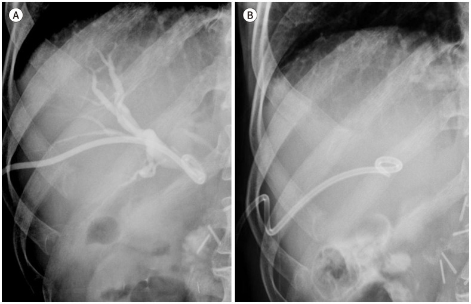
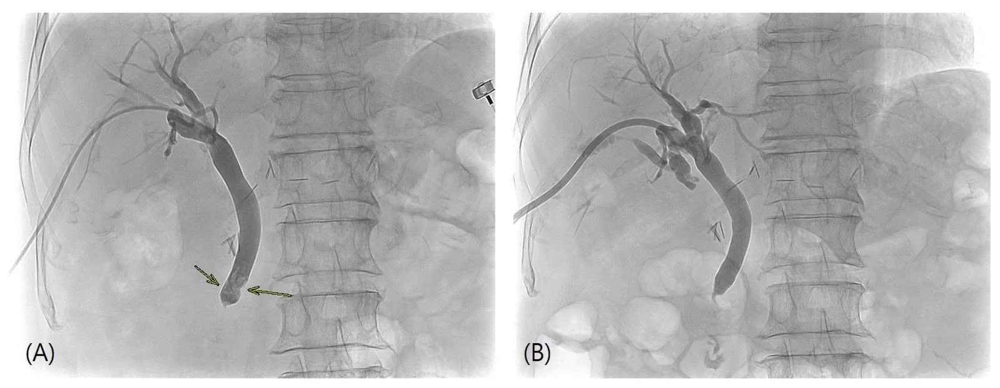
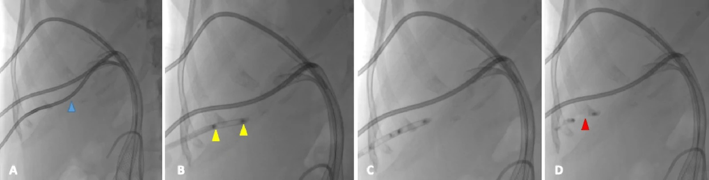

105 — Theo dõi ống dẫn lưu mật qua da: chăm sóc, rút ống theo đường hầm & biến chứng muộn / Follow-up of percutaneous transhepatic biliary drainage: care, tract removal & late complications
Tags: pattern:tac-mat pattern:di-tru-catheter pattern:hemobilia pattern:ro-mat vung:duong-mat protocol:PTBD incidentaloma:catheter-di-tru
Mức chắc chắn (certainty): tổng hợp y văn (literature synthesis) — tự biên từ y văn mở (CC BY 4.0, CC BY-NC 4.0, CC BY-NC-ND 4.0); các ca minh họa là ca nguyên văn của bài gốc (giữ đúng tuổi/thời điểm trong chú thích).
Đây là bài "sau khi đặt ống", không phải bài "đặt ống". 910 – Dẫn lưu: áp-xe, PTBD & thận qua da phủ kỹ thuật chọc – Seldinger – xác nhận vị trí; 137 – Theo dõi stent/dẫn lưu đường mật phủ stent kim loại/nhựa và tắc stent; 131 – Tắc mật phủ chẩn đoán tắc mật. Bài này trả lời 4 câu hỏi của tuần thứ 2 trở đi: ống còn thông không? còn đúng chỗ không? chăm sóc tại nhà thế nào? rút ống lúc nào và rút như thế nào để không rò mật?
1. Tổng quan bệnh học – cơ chế hình ảnh
1.1 Ống PTBD là gì và "sống" nhờ đâu
- PTBD (percutaneous transhepatic biliary drainage) = catheter 8–10 Fr đưa qua nhu mô gan vào đường mật. Ba kiểu: dẫn lưu ngoài (external) — mật chỉ ra túi; dẫn lưu trong–ngoài (internal–external, "ring catheter") — đầu ống qua chỗ hẹp xuống tá tràng, mật chảy theo 2 đường; chuyển sang stent trong (internal stent) — bỏ phần ra da.
- Ống PTBD không "cắm" vào đường mật — nó được GIỮ bởi 3 thứ: (1) vòng pigtail mở trong lòng ống mật, (2) đường hầm xuyên nhu mô gan (tract) siết quanh thân ống, (3) neo da (khâu/chốt cố định). Mất một trong ba → ống di trú; mất cả ba → ống rơi ra ngoài.
- TẠI SAO ống tắc (vật lý + mô bệnh): lòng ống 8–10 Fr chỉ ~2,7–3,3 mm; mật là dịch giàu muối mật + protein + canxi; tiếp xúc vật liệu lạ → màng sinh học (biofilm) vi khuẩn bám thành ống rồi kết tủa cặn bùn (sludge), kèm máu đông (sau hemobilia), mảnh u hoặc thức ăn trào ngược (duodenobiliary reflux) → tắc dần trong vài tuần. Đây là lý do ống phải được rửa định kỳ và đổi định kỳ dù bệnh nhân hoàn toàn không triệu chứng.
- TẠI SAO hemobilia (cơ chế giải phẫu): nhánh động mạch gan và tĩnh mạch cửa chạy sát đường mật trong khoảng cửa; đầu ống cứng hoặc mũi chọc xuyên qua thành ống mật vào mạch → thông động–mật (arterio-biliary fistula) hoặc giả phình (pseudoaneurysm). Máu vào đường mật theo gradient áp lực (động mạch ~90–100 mmHg ≫ đường mật ~10–15 cmH₂O) nên chảy thành tia, ồ ạt, đông lại trong lòng mật thành cục máu (clot) — vừa gây thiếu máu, vừa bít ống → chẩn đoán dễ bị "đổ lỗi cho ống tắc" và bỏ sót nguồn chảy.
- TẠI SAO rút ống có thể gây rò mật: đường hầm xuyên gan chưa có vỏ xơ vững trong những tuần đầu. Khi rút, lỗ hổng giữa đường mật ↔ bao gan ↔ khoang phúc mạc/màng phổi còn mở; nếu áp lực đường mật cao hoặc đường vào quá cao xuyên qua màng phổi, mật chảy vào ổ phúc mạc (biloma, viêm phúc mạc mật) hoặc màng phổi (biliothorax).
1.2 Ngưỡng định lượng bắt buộc
| Đại lượng | Con số | Nguồn |
|---|---|---|
| Biến chứng chung khi đặt PTBD | ~10% ca (nhẹ: đau, di trú ống; nặng: có thể tử vong) | World J Radiol 2026 (PMC13527549) |
| Nhiễm trùng sau PTBD | 7,4% (337 BN); yếu tố độc lập: cổ trướng, nhiều mũi chọc, neutrophil cao, Hb thấp; AUC mô hình 0,825 | BMC Surg 2026 (PMC13343715) |
| Xuất huyết sau PTBD | 9,5% (337 BN); yếu tố độc lập: Hb thấp, prealbumin thấp; AUC 0,866 | BMC Surg 2026 (PMC13343715) |
| Xuất huyết sau can thiệp mật qua da (tổng quan) | 1,1–9,9% | World J Radiol 2026 (PMC13527549) |
| Di trú ống PTBD | 30,56% (224/733 lần đặt); có triệu chứng 19,92%; trung vị 32 ngày (1–233 ngày) | J Korean Soc Radiol 2023 (PMC10721429) |
| Yếu tố dự báo di trú có triệu chứng | nam OR 1,64; đường vào bên phải OR 1,57; góc vào tăng OR 1,015/độ; pigtail không khép kín OR 1,67 | J Korean Soc Radiol 2023 (PMC10721429) |
| Rò mật quanh ống (pericatheter leak) | tới 33% BN PTBD | ICRI guideline 2021 (PMC8448229) |
| Rửa ống tại nhà | 20 mL NaCl 0,9% vô khuẩn × 2–3 lần/ngày | ICRI guideline 2021 (PMC8448229) |
| Đổi ống định kỳ | mỗi 2–3 tháng, dưới che phủ kháng sinh (giảm viêm đường mật) | ICRI guideline 2021 (PMC8448229) |
| Rút ống sớm (đủ tiêu chí) | 7–10 ngày: biến chứng sau rút 2,5% vs 1,9% (p > 0,999); nằm viện 12 vs 17 ngày (p < 0,001) | J Clin Med 2026 (PMC13607037) |
| Nút đường hầm khi rút | kỹ thuật thành công 100% (84 lần/54 BN); thành công lâm sàng 87%; 5/54 tràn dịch màng phổi/cổ trướng do plug di trú, kéo dài nằm viện 4,5 ± 0,9 ngày | Interv Radiol 2026 (PMC13572925) |
| Chăm sóc tăng cường sau xuất viện (meta-analysis 9 RCT, 854 BN) | giảm nhiễm trùng đường mật RR 0,42; tắc ống RR 0,23; di trú ống RR 0,31; nhiễm trùng da quanh ống RR 0,30; tái nhập viện RR 0,34 | World J Clin Cases 2024 (PMC11235434) |
2. Mẫu hình + chẩn đoán phân biệt theo cơ chế hỏng ống (Gamut)
2.1 Bốn cơ chế hỏng ống — hỏi "ống hỏng theo kiểu gì?" trước khi hỏi "bệnh gì?"
- TẮC (occlusion): cặn bùn/biofilm, cục máu, mảnh u, thức ăn trào ngược. Biểu hiện: dịch ra giảm đột ngột + vàng da/bilirubin tăng lại + sốt, hoặc mật rỉ quanh chân ống (vì mật tìm đường khác).
- DI TRÚ (migration/dislodgement): ống tụt ra ngoài da, hoặc tụt sâu vào trong gan, hoặc đầu pigtail bật khỏi lòng ống mật. Biểu hiện: chân ống ướt, đau tăng, sốt, dịch ra ít — bệnh nhân thường mô tả "ống dài ra".
- XUẤT HUYẾT (hemobilia): máu tươi trong túi/qua ống, có khi melena; tam chứng Quincke (vàng da – đau hạ sườn phải – melena) chỉ gặp một phần.
- RÒ (leak): mật rỉ quanh ống ra da (pericatheter leak) → kích ứng da, nhiễm trùng da; hoặc mật tích trong ổ phúc mạc (biloma) / khoang màng phổi (biliothorax) khi đường hầm hở.
2.2 Gamut theo THỜI ĐIỂM (quyết định nguyên nhân)
- < 48 giờ: biến chứng thủ thuật — chảy máu/hemobilia, tràn dịch màng phổi, thủng, đau, nhiễm trùng huyết do bơm mật nhiễm khuẩn.
- 3 ngày – 4 tuần: di trú ống (trung vị 32 ngày), tắc sớm do cục máu/sludge, viêm đường mật do dẫn lưu chưa đủ (còn phân thùy chưa dẫn lưu).
- > 1 tháng – nhiều tháng: tắc mạn do biofilm/sludge, u phát triển bít đầu ống, ống gãy/lão hóa vật liệu, tái hẹp.
2.3 Gamut theo TRIỆU CHỨNG dẫn đường
| Bệnh cảnh | Nghĩ trước tiên |
|---|---|
| Sốt + vàng da tái phát, ống còn tại chỗ | Viêm đường mật do ống tắc hoặc dẫn lưu chưa đủ (còn thùy chưa chọc) |
| Sốt + chân ống ướt + ống "dài ra" | Di trú ống |
| Máu tươi qua ống / melena / Hb tụt | Hemobilia (giả phình, thông động–mật) |
| Dịch ra rất ít, ống cứng, bơm rửa thấy cản | Tắc ống (sludge/clot) |
| Đau ngực/khó thở sau rút hoặc đổi ống | Biliothorax / tràn dịch màng phổi |
| Không triệu chứng, ống quá hạn đổi | Tắc "âm thầm" — chỉ phát hiện khi bilirubin tăng |
3. Bảng so sánh phân biệt (ma trận đối chiếu)
| Thực thể (entity) | Hình ảnh/lâm sàng điển hình | Chốt vào (rule-in) | Chốt loại (rule-out) | Gợi ý xác nhận |
|---|---|---|---|---|
| Tắc ống do cặn bùn | Dịch ra giảm, bilirubin tăng lại, không sốt hoặc sốt nhẹ; cholangiogram qua ống: khuyết đổ đầy trong lòng ống, không thấy mật xuống tá tràng | Bơm rửa thấy lực cản + cholangiogram qua ống cho thấy ống không thông | Mật chảy tốt qua ống xuống tá tràng + bilirubin giảm → không tắc | Bơm rửa ấm; đổi ống (đừng chỉ tăng kháng sinh) |
| Di trú ống | So phim cũ: đầu pigtail tụt khỏi ống mật, ống ngắn/rút ra ngoài; chân ống ướt, đau | Thay đổi vị trí đầu ống so phim trước + mất lưu thông mật | Đầu ống không đổi vị trí trên 2 phim → không di trú | X-quang bụng/fluoroscopy; đặt lại dây dẫn qua ống cũ nếu còn đường |
| Hemobilia – giả phình ĐM gan | Máu tươi qua ống ± melena; CTA thấy giả phình; cholangiogram có cục máu hình khuyết | Máu tươi qua ống + Hb tụt + CTA/DSA có giả phình hoặc thông động–mật | Chỉ váng máu nhẹ, tự hết, Hb ổn định → theo dõi, không can thiệp | CTA bắt buộc; DSA + coil/glue/stent phủ |
| Hemobilia do thông TĨNH MẠCH CỬA | Máu sẫm, chảy chậm, áp lực thấp; cholangiogram thấy nhánh cửa hiện hình | Nhánh tĩnh mạch cửa hiện trên cholangiogram + máu sẫm | Máu tươi phun thành tia → nghĩ động mạch | Kẹp ống tạm thời/nâng cỡ ống; nếu không hết → can thiệp |
| Rò mật quanh ống | Da quanh chân ống đỏ, ướt, đau; gạc thấm mật; ± biloma | Mật rỉ quanh thân ống + ống vẫn thông | Không rỉ + ống thông tốt → không rò | Đổi ống cỡ lớn hơn, đặt lại đúng vị trí, dẫn lưu biloma, túi hút dán |
| Viêm đường mật tái phát | Sốt, vàng da, CRP/bili tăng; CT: giãn mật lại dù còn ống | Sốt + giãn mật tái phát + ống tắc/di trú | Giãn mật không tăng + CRP bình thường → theo dõi | Cấy máu + cấy mật; kháng sinh; đổi/nâng ống |
| Ống gãy (fracture) | X-quang: ống đứt thành nhiều đoạn, có mảnh trong đường mật; bơm rửa không được | Đứt ống trên X-quang + không rửa được | Ống còn liền, chỉ gập → nắn lại | Nội soi lấy mảnh trong mật + đặt ống mới |
| Biliothorax / tràn dịch sau rút | Đau ngực, khó thở, tràn dịch mới sau rút/đổi ống; dịch màu mật | Tràn dịch mới + bilirubin dịch cao hơn huyết thanh | Tràn dịch cũ không đổi → không do thủ thuật | CT ngực; dẫn lưu màng phổi; nút đường hầm |

Trái: cholangiogram qua ống dẫn lưu — khuyết đổ đầy trong lòng đường mật do cục máu. Phải (A→C): chụp mạch gan chọn lọc thấy giả phình nhánh động mạch gan (A, mũi tên), thoát mạch thì sớm (B), và coil loại bỏ hoàn toàn giả phình (C). Bệnh nhân nữ 74 tuổi, hemobilia 36 giờ sau đặt PTBD. Nguồn: Latorre Pinto A, Cureus 2026 (PMC13102264), CC BY 4.0 — ảnh ghép letterbox giữ nguyên tỷ lệ.4. Protocol theo dõi + thuật toán xử trí
4.1 Lịch theo dõi chuẩn (sau khi xuất viện)
| Thời điểm | Việc phải làm |
|---|---|
| Hằng ngày (bệnh nhân/người nhà) | Ghi lượng mật ra (mL/24h), màu mật (vàng trong / sẫm / có máu), rửa ống 20 mL NaCl 0,9% × 2–3 lần, kiểm tra neo da, chăm sóc da quanh chân ống, thay túi |
| 1 tuần đầu | Bilirubin, CRP, công thức máu; kiểm tra vị trí ống; siêu âm nếu dịch ra bất thường |
| Mỗi 2–3 tháng | Đổi ống định kỳ dưới che phủ kháng sinh (giảm viêm đường mật) |
| Mỗi 3–6 tháng + khi có triệu chứng | Bilirubin/ALP; cholangiogram qua ống hoặc MRCP nếu nghi tắc; CT nếu nghi u tiến triển |
| Bất kỳ lúc nào có sốt/đau/máu | Khám ngay — không chờ lịch |
4.2 Tiêu chí RÚT ỐNG (3 tiêu chí + nghiệm pháp kẹp)
- Viêm đã lắng: sốt hết, WBC và CRP giảm so với lúc đặt ống.
- Tắc mật đã giải: cholangiogram qua ống không còn khuyết tắc, không thoát mạch ra ngoài (so với phim lúc đặt).
- Nghiệm pháp kẹp (clamp test) âm tính: kẹp ống đủ thời gian theo dõi mà không đau, không sốt, không xấu đi về sinh hóa, huyết động ổn.
- Đủ 3 tiêu chí → rút được ở ngày 7–10 (nguyên nhân thường gặp: sỏi ống mật chủ, hẹp lành tính, một số tắc mật ác tính chọn lọc) — tỉ lệ biến chứng sau rút 2,5%, chủ yếu biloma 1,5%, viêm phúc mạc mật 0,5%, hemobilia 0,5%.
- Thiếu bất kỳ tiêu chí nào → KHÔNG rút: giữ ống, đổi ống, hoặc chuyển stent trong nếu tắc không thể giải (xem 137).
4.3 Rút ống "theo đường hầm" — vì sao phải nghĩ tới nút đường hầm
- Đường hầm xuyên gan là một lỗ thật giữa đường mật và bao gan/bề mặt gan; rút ống ra là mở lỗ đó. Nếu đường vào cao, sát vòm hoành, lỗ hổng thông với khoang màng phổi → biliothorax.
- Kỹ thuật nút đường hầm bằng Gelfoam (kinh nghiệm 84 lần/54 BN): cuộn Gelfoam thành trụ, đánh dấu Lipiodol 2 đầu để thấy trên fluoroscopy, đẩy qua sheath mạch máu 8 Fr đặt trong đường hầm, kéo sheath và đẩy plug sao cho plug vươn tới bao gan. Kết quả: bít kín 100%, không rò mật/chảy máu 87%; biến chứng nhẹ: 2 ca chảy máu đường hầm tự hết; 5 ca tràn dịch màng phổi/cổ trướng do plug di trú (nằm viện thêm 4,5 ± 0,9 ngày).
- Nguyên tắc chọn: nút đường hầm khi (a) đã đặt stent trong và không cần đường vào nữa, (b) đường vào xuyên qua màng phổi/ngực bụng, (c) bệnh nhân cổ trướng (mật rò vào dịch cổ trướng dễ viêm phúc mạc), (d) rút ống ở bệnh nhân đông máu xấu (nguy cơ chảy máu đường hầm).
4.4 Thuật toán "ống có vấn đề"
flowchart TD
A[Ống PTBD có vấn đề] --> B{Có máu tươi qua ống<br/>hoặc melena?}
B -->|Có| C[Bù dịch, theo dõi Hb<br/>CTA bắt buộc]
C --> D{CTA thấy giả phình<br/>hoặc thông động - mật?}
D -->|Có| E[DSA: coil / glue / stent phủ]
D -->|Không| F[Kẹp ống tạm, nâng cỡ ống<br/>theo dõi 24 - 48 giờ]
B -->|Không| G{Sốt + vàng da<br/>hoặc dịch ra giảm?}
G -->|Có| H[Cholangiogram qua ống]
H --> I{Ống còn đúng vị trí?}
I -->|Không| J[Đặt lại dây dẫn - đổi ống mới<br/>kháng sinh]
I -->|Có| K[Đổi ống + cấy mật<br/>kháng sinh theo cấy]
G -->|Không| L{Mật rỉ quanh chân ống?}
L -->|Có| M[Đổi ống cỡ lớn hơn<br/>dẫn lưu biloma, chăm sóc da]
L -->|Không| N[Đủ 3 tiêu chí rút ống?]
N -->|Có| O[Rút ống 7 - 10 ngày<br/>cân nhắc nút đường hầm Gelfoam]
N -->|Không| P[Giữ ống - đổi định kỳ 2 - 3 tháng]
5. Biến thể bình thường và cạm bẫy
- Khí trong đường mật (aerobilia) sau PTBD là BÌNH THƯỜNG — ống nối đường mật với không khí ngoài da. Đừng gọi là "đường mật hoại tử" hay "áp-xe khí"; chỉ lo khi có sốt + khí trong nhu mô/thành mạch (nhiễm khuẩn sinh khí).
- Bọt khí giả khuyết đổ đầy: khi bơm mật qua ống, bọt khí tạo khuyết tròn, di động, thay đổi khi bơm thêm — khác cục máu/sỏi (cố định, bờ rõ, không đổi). Bơm chậm, bơm lặp lại để phân biệt; đừng mổ vì bọt khí.
- Giả ảnh beam-hardening của ống/vật liệu kim loại trên CT che mất tổn thương sát ống — đọc thêm MRCP hoặc cửa sổ khác thay vì kết luận "không thấy u".
- Cạm bẫy "thỏa mãn tìm kiếm" (satisfaction of search): đã thấy ống đúng vị trí là dừng — bỏ sót giả phình động mạch, biloma, áp-xe phân thùy chưa dẫn lưu ở thì tĩnh mạch. Luôn đọc toàn bộ gan trên thì động mạch + tĩnh mạch, không chỉ nhìn ống.
- Cạm bẫy "ống tắc = tăng kháng sinh": tắc cơ học không đáp ứng kháng sinh. Nếu sốt mà không đổi/nâng ống → viêm đường mật tái phát và có thể sốc nhiễm khuẩn.
- Cạm bẫy thời gian đổi ống: bệnh nhân bỏ lịch đổi ống 11 tháng (lịch 3 tháng) đã gãy ống thành 3 mảnh trong đường mật, phải lấy qua nội soi — hậu quả của "ống không đau nên không cần đổi".
- Rút ống ở bệnh nhân cổ trướng/đông máu xấu: tăng nguy cơ rò mật vào dịch cổ trướng và chảy máu đường hầm → ưu tiên nút đường hầm + bù đông máu trước.
6. Tự lượng giá — Blind Quiz
Ca 1 — Nữ 74 tuổi, vàng da do u rốn gan, đặt PTBD. 36 giờ sau: máu tươi qua ống, Hb tụt, cần truyền 2 đơn vị hồng cầu.

- Câu hỏi: (1) Dấu hiệu trên cholangiogram là gì? (2) Nguồn chảy nằm ở đâu? (3) Bước chẩn đoán và điều trị tiếp theo?
Bấm để hiện đáp án
- Dấu hiệu: nhiều khuyết đổ đầy dạng đường và dạng tròn trong lòng đường mật = cục máu đông trong hemobilia (không phải sỏi: sỏi có bờ rõ, không xuất hiện sau thủ thuật 36 giờ).
- Nguồn chảy: giả phình nhánh động mạch gan (xác nhận bằng chụp mạch gan chọn lọc — ảnh trong phần 3).
- Điều trị: bù dịch/máu + DSA can thiệp (coil ± glue ± stent phủ) để loại giả phình. Tỉ lệ xuất huyết sau can thiệp mật qua da 1,1–9,9%; CTA là bắt buộc để tìm nguồn và lập kế hoạch.
- Phản biện: hemobilia có thể tự cầm nếu chỉ rỉ máu nhẹ, huyết động ổn — nhưng máu tươi + Hb tụt thì không chờ.
- Nguồn ảnh: Latorre Pinto A, Cureus 2026 (PMC13102264), CC BY 4.0.
Ca 2 — Nam 68 tuổi, PTBD vì hẹp đường mật ác tính. 5 tuần sau: sốt 38,8 °C, vàng da tăng, túi mật ra chỉ 80 mL/24h (trước 400 mL).

- Câu hỏi: (1) Hai khả năng hàng đầu? (2) Dấu hiệu nào trên phim phân biệt? (3) Xử trí?
Bấm để hiện đáp án
- Hai khả năng: tắc ống và di trú ống (kèm viêm đường mật do dẫn lưu không đủ).
- Phân biệt: so phim ngay sau đặt — nếu đầu pigtail tụt khỏi ống mật/ống ngắn đi → di trú; nếu vị trí không đổi mà cholangiogram qua ống không thấy mật xuống tá tràng → tắc.
- Xử trí: cấy máu + kháng sinh, cholangiogram qua ống; di trú → đặt lại dây dẫn/đổi ống; tắc → đổi ống (không chỉ tăng kháng sinh). Di trú gặp ở 30,56% lần đặt, 19,92% có triệu chứng, trung vị 32 ngày; nguy cơ cao hơn với pigtail không khép kín (OR 1,67) và đường vào bên phải (OR 1,57).
- Nguồn ảnh: Yu HJ et al., J Korean Soc Radiol 2023 (PMC10721429), CC BY-NC 4.0 — giữ nguyên bản.
Ca 3 — Nữ 55 tuổi, sỏi ống mật chủ đã lấy qua PTBD, hết sốt, bilirubin về bình thường. Cholangiogram qua ống trước khi rút.

- Câu hỏi: (1) Hai ảnh khác nhau ở đâu? (2) Đủ tiêu chí rút ống chưa? (3) Rút sớm có an toàn không — số liệu nào bảo vệ quyết định của bạn?
Bấm để hiện đáp án
- (A) lúc đặt: khuyết đổ đầy + tắc đoạn cuối ống mật chủ (mũi tên). (B) trước rút: khuyết đã mất, không còn tắc, không thoát mạch.
- Đủ tiêu chí khi cộng thêm: viêm đã lắng (hết sốt, WBC/CRP giảm) và nghiệm pháp kẹp ống âm tính (không đau, không sốt, không xấu sinh hóa).
- Rút ngày 7–10 an toàn: biến chứng sau rút 2,5% (biloma 1,5%, viêm phúc mạc mật 0,5%, hemobilia 0,5%) so với 1,9% khi rút muộn hơn 10 ngày (p > 0,999) — nhưng nằm viện ngắn hơn 5,36 ngày (12 vs 17 ngày).
- Phản biện: đây là nghiên cứu hồi cứu một trung tâm ở viêm đường mật cấp; không được suy ra "rút sớm cho mọi bệnh nhân" — tắc mật ác tính chưa giải vẫn cần ống/stent.
- Nguồn ảnh: Lee JM et al., J Clin Med 2026 (PMC13607037), CC BY 4.0.
Ca 4 (nâng cao) — Bệnh nhân đã được đặt stent trong, cần rút ống PTBD. Đường vào xuyên qua màng phổi.

- Câu hỏi: (1) Vì sao không rút ống "trần"? (2) Kỹ thuật nút đường hầm gồm các bước nào?
Bấm để hiện đáp án
- Vì sao: đường hầm nối đường mật với khoang màng phổi → rút trần dễ biliothorax/rò mật; nút đường hầm bít lỗ hổng ngay khi rút.
- Các bước: thay ống bằng sheath mạch máu 8 Fr, kéo sheath về đường hầm xuyên gan ngay trên chỗ chọc ống mật; đưa trụ Gelfoam (2 đầu đánh dấu Lipiodol) vào sheath; đẩy plug tới bao gan; kiểm tra fluoroscopy bít kín hoàn toàn.
- Số liệu: kỹ thuật thành công 100% (84 lần), lâm sàng 87%; biến chứng hay gặp là plug di trú → tràn dịch màng phổi/cổ trướng (5/54), kéo dài nằm viện ~4,5 ngày.
- Nguồn ảnh: Singhal S et al., Interv Radiol 2026 (PMC13572925), CC BY-NC 4.0 — giữ nguyên bản.
Bài liên quan chéo
- 910 – Dẫn lưu: áp-xe, PTBD & thận qua da — kỹ thuật đặt ống (bài trước của bài này)
- 137 – Theo dõi stent/dẫn lưu đường mật: di trú, tắc, viêm đường mật tái phát
- 131 – Tắc mật — chẩn đoán tắc mật
- 132 – Hẹp đường mật không xác định
- 925 – Dẫn lưu đường mật trước phẫu thuật
- 920 – Nút mạch cầm máu tiêu hóa — kỹ thuật coil/glue dùng lại trong hemobilia
- 100 – Tổng quan hệ Bụng
Ảnh
- Tên file:
105_slug_Modality_SourceID.jpg; nguồn + giấy phép từng ảnh trongimages/CREDITS.md. - CC BY-NC (Yu HJ 2023; Singhal S 2026): giữ nguyên bản, không crop/ghép.
- CC BY 4.0 (Lee JM 2026; Latorre Pinto A 2026): được ghép letterbox kèm attribution.
Không dùng để chẩn đoán độc lập khi chưa có người hướng dẫn.